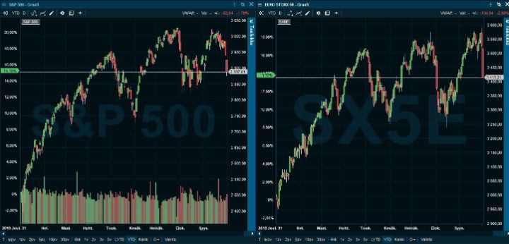
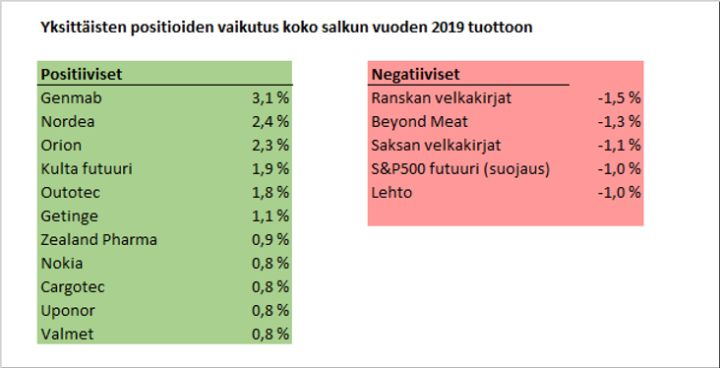
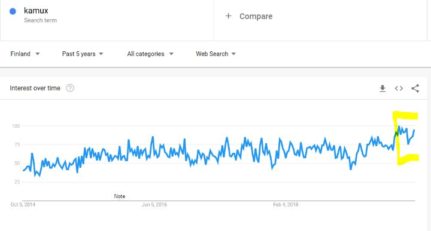
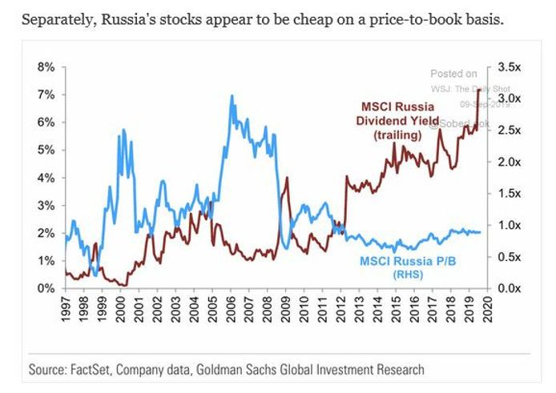
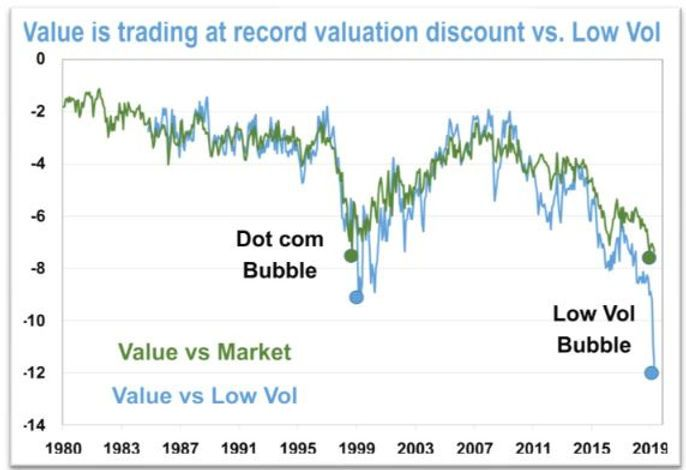
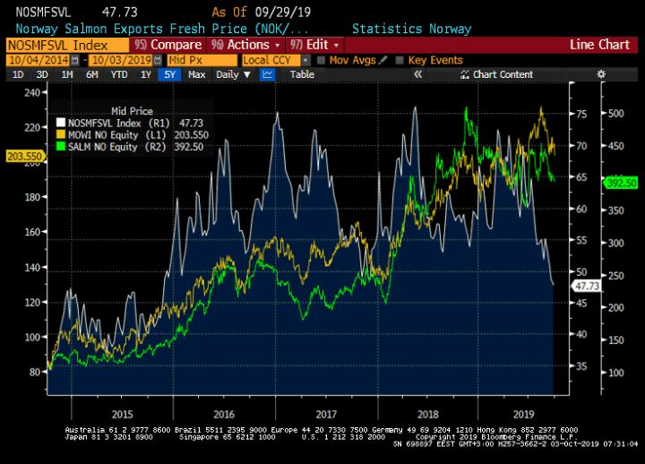

Kolmannen neljänneksen jälkiviisastelut
Kuukausi sitten kaikki salkun positiot tuntuivat uivan miinuksella. Markkinajumalat sylkivät päälle ja viini tuntui muuttuvan vedeksi. Sitten kaikki kääntyi. Pankit ja öljy-yhtiöt lähtivät nousuun, arvo-osakkeet voittivat kasvuosakkeet ja jopa korot hieman nousivat. Salkun arvo nousi 7 % parissa viikossa maltillisella riskitasolla.
Koko alkuvuoden tuotoksi muodostuu kulujen jälkeen 31 %. Koska pääoma kasvaa joka neljänneksellä, vaatii samaan tuottoon pääseminen aina vähän isommat rahalliset tuotot. Tästä syystä kolmannen neljänneksen tuotto jäi karvan verran alle 10 %.
Länsimaiden osakkeet ovat sahanneet ylös ja alas viimeiset puoli vuotta. Riippuen indeksistä, varakkaiden maiden pörssit ovat nousseet 10-20% tänä vuonna. Käytännössä tämä vastaa kuitenkin vain viime vuoden viimeisen neljänneksen osakekurssien laskua. Ensimmäisen neljänneksen reilun nousun jälkeen indeksit ovat jatkaneet portaita ylös, hissillä alas mallista kehitystä. Viimeiseen puoleen vuoteen osakkeet eivät ole menneet oikein mihinkään (vasen S&P 500, oikea EuroStoxx50)

Elämme uudessa uljaassa maailmassa, jossa vähäriskiset osakkeet ovat korvaamassa velkakirjat. Toisaalta syklisiä osakkeita ei oikein kukaan halua omistaa, koska kaikki ”tietävät” taantuman tulevan kohta. Vaihtoehtoina on kaikkien aikojen kalleimmat vakaat yhtiöt tai tavanomaisesti hinnoitellut sykliset yhtiöt.
Vaikka kaikki historialliset aikasarjat tuntuvat huutavan taantuman vaaraa, emme pidä sitä varmana lähivuosille. Kiina kaivaa itseään syvemmälle kuoppaan, mutta muuten maailman kuluttajat voivat pitää maailmantalouden elossa.
Euroopan ja Kiinan automyynti sakkasi noin vuosi sitten — pitkälti sääntelymuutosten sysäämänä. Tämä levisi laajemmin investointitavaroiden kysynnän laskuksi. Tämä syklisten yhtiöiden heikompi kausi alkaa olla siis jo vuoden vanha. On tehty varotoimia, leikattu tuotantoa ja pienennetty varastoja. Tulevina kuukausina edellisen vuoden vertailuluvut alkavat helpottamaan. Jos kuluttajat pitävät pintansa, parantuvat talousluvut voivat alkaa nostaa myös sentimenttiä laajemmin.
Jos talous tästä vielä elpyisi vahvemmaksi, on työttömyys valmiiksi alhainen ja monin paikoin työvoimasta on jopa pulaa. Edes vähän nousevat pitkät korot painaisivat luultavasti varmoina tuloksentekijöinä pidettyjen osakkeiden kursseja ja nostaisi syklisiä yhtiöitä, koska ne on hinnoiteltu kohtuullisiksi taantuman pelossa.
Massojen käyttäytymistä on kuitenkin lähes mahdoton ennustaa. Heikko teollisuustuotanto voi myös johtaa pörssikurssien laskuun, negatiivisiin uutisiin ja lopulta vähentyneeseen kulutukseen. Sen takia todella voimakas panostus syklisiin osakkeisiin on meille turhan riski ehdotus. Tehdäkseen ylituottoja, pitää erottua JA olla oikeassa. Erottuminen ei yksistään riitä. Tuoton odotusarvon maksimoinnin sijaan yritämme löytää sopivan tasapainon, jossa myös kolaukset sijoitetulle pääomalle pysyvät pieninä.
Jatkamme eurooppalaisiin ja kehittyvien markkinoiden osakkeisiin sijoittamista ja alipainotamme Yhdysvaltoja. Omistamme nyt maltillisemmin kultaa ja olemme edelleen shorttina valtioiden velkakirjoihin. Salkkumme on paljon yksinkertaistettuna seuraava:
- Osakkeet 35% (22% pohjoismaat, 11% kehittyvät markkinat, 2% Yhdysvallat)
- Kulta ja hopea 10%
- Korkoshortit -50%
Mitä jatkossa?
Kirjoitin reilu kuukausi sitten, että osakkeiden suhteen on kaksi strategiaa eri skenaarioille jatkossa:
1. Jos talousluvut heikkenevät, ostamme osakkeita lisää rauhallisesti seuraavan muutaman vuoden aikana.
2. Jos talousluvut paranevat, ostamme lisää osakkeita nopeammin.
Maailma on nyt jopa enemmän täynnä uhkia kuin normaalisti. Kuitenkin keskuspankit pyörittävät tuolileikkiä, mitä pitää pelata niin kauan, kun musiikki soi. Korkojen ollessa nollassa, osakkeilla ja muilla riskisillä omaisuuserillä on painetta ylöspäin.
Nyt kahtena päivänä osakkeet ovat laskeneet 3-4 % Yhdysvaltojen ostopäällikköindeksin pettäessä suhteessa odotuksiin. Olemme taas vanhassa tutussa ”pelätään taantumaa” moodissa.
Meidän osakepainomme on kuitenkin noin 1/3 pääomasta. Emme pistä yhtään pahaksemme alempia osakkeiden arvoja. Jossain vaiheessa olisi miellyttävää olla 100 % osakepainossa ja nostaa jalat pöydälle pariksi vuodeksi.
Emme kuitenkaan poissulje mahdollisuutta nostaa osakepainoa myös ilman osakkeiden laskuakaan. Olemme rahoitusmarkkinoiden likviditeetin suhteen tuntemattomilla vesillä. Rahaa löytyy ja luotto on halpaa. Kaikki on pedattu myös kunnon loppurallille, jos kuluttajat eivät masennu.
Yhdysvaltojen presidentinvaalit ovat vähän kaksiteräinen piippu. Yhtäältä Trump tulee tekemään tarvittaessa jotain naurettavan tyhmää pitääkseen talouden pirteänä vaaleihin asti. Siinä ei paljon budjettivajeet paina, kun etsitään valtaa ja suojaa rikostutkinnoilta. Veronleikkaukset tai muut hätäratkaisut eivät kuitenkaan takaa vallivoittoa, mutta voivat piristää hetkeksi taloutta.
Toisaalta Elizabeth Warren on tällä hetkellä Demokraattien todennäköisin ehdokas yli 50% todennäköisyydellä. Olen Warrenin kanssa samaa mieltä, että varallisuuseroille jenkkilässä pitäisi tehdä jotain. Mutta samalla on hyvä tiedostaa, että Yhdysvalloissa pörssikurssit ottaisivat hänen valintansa hyvin raskaasti vastaan. Loppujen lopuksi osakkeet ovat luultavasti 15-20% korkeammalla Trumpin veronalennusten takia kuin jos ne olisivat jääneet tekemättä. Tämän kumoamisen päälle kunnon varallisuusvero sekä lääke-, teknologia- ja energiayhtiöiden kurittaminen sääntelyllä, niin karhumarkkina on valmis.
Epävarmuutta lisää sekin seikka, että jos Yhdysvallat menisi kaikesta huolimatta taantumaan ennen vaaleja, demokraattiehdokkaan voitto on entistä todennäköisempää. Joten normaalin tuloslaskun päälle tulisi todennäköisesti vielä veronkorotuksia ja sääntelyä.
Vaalit tuovat siis vuoristorataa markkinoille ja vaikeuttavat entisestään sijoittamista. Itse olin kuukausi sitten innoissani sijoittamaan yhdysvaltalaisiin öljy-yhtiöihin kuten EOG ja Diamondback. Ne tuottavat vihdoin vapaata kassavirtaa melko matalallakin öljyn hinnalla ja näen niissä paljon hyviä optioita. Myin kuitenkin omistukseni, kun rouva Warren twiittasi kieltävänsä liuskeöljyn poraamisen ensimmäisenä toimenaan presidenttinä. En tiedä ymmärtääkö hän, että kokonainen satojen miljardien ala menisi konkurssin, öljy ostettaisi sitten Lähi-Idästä ja Yhdysvallat menettäisi yhden tärkeimmistä kasvun moottoreistaan. Maahan on kuitenkin maailman suurin öljyntuottaja juuri näiden tuottajien ansiosta. Liike vastaa neroudessaan Fukusiman jälkeisiä ydinvoimaloiden korvaamista hiilivoimalla. Näitä riskejä ei oikein vielä hinnoitella, mutta asiat voivat muuttua nopeasti.
Alkuvuoden hudit ja osumat
Aika ajoin on hyvä katsoa, mistä salkun tuotto muodostuu. Seuraavassa alkuvuoden osalta, mitkä positiot ovat tuottaneet parhaiten.

- Ensimmäinen huomio on, ettei tänä vuonna ole tullut mitään jättimenestyksiä. Tälle on yksinkertainen syy, eli positioiden koko. Se on heijastanut epävarmuutta ja varovaisuutta. Käytännössä suurin osa tuotoista on tullut pienistä puroista.
- Lääkeyhtiöt ja muut lääkealan yhtiöt ovat tuottaneet hyvin. Niiden osuus on 1/3 koko salkun tuotosta. Näihin pitäisi panostaa vieläkin enemmän, koska ne tuntuvat toimivat vuodesta toiseen.
- Sijoituspiireissä arvostetaan yleensä suurten voittajien kyydissä pitkään ratsastamista. Tämä vuosi on hyvä esimerkki siitä, että jopa umpisurkealla Nordean osakkeellakin voi tehdä merkittäviä tuottoja myös ostamalla. Osta halvalla, myy 10-15% kalliimmalla. Kun sen tekee riittävän monta kertaa, ei se ole yhtään sen vähempiarvoista rahaa kuin yhdessä isossa nousussa roikkuminen.
- Negatiiviset erät ovat osa sijoittamista ja treidausta. Jälkikäteen on helppo nähdä, mitä olisi pitänyt tehdä. Ehkä yhteinen teema häviäjille on, että momentumia vastaan on valittava taistelut entistä huolellisemmin.
Uusia positioita
Kamux
Teimme Kamuxiin reiluhkon panostuksen, kun osakkeen kurssi painettiin alas viiteen euroon hyvän tuloksen jälkeen.
Kun mietin Kamuxiin sijoittamista, mieleeni juolahti Peter Lynch. Lynch tunnetaan ehkä kaikkien aikojen parhaana osakerahaston hoitajana. Kirjassaan ”One up on Wall Street”, Lynch mainitsee 13 täydellisen osakkeen ominaisuutta. Katsotaan, miten Kamux täyttää ne:
- 1. Yhtiö kuulostaa tylsältä ja 2. tekee jotain tylsää, joka ei herätä intohimoja. Lisäksi 3. alassa tai yhtiössä on jotain kiistanalaista, miksi moni ei halua koskea osakkeeseen.
3/3— Kamux täyttää nämä kriteerit heittämällä. Käytettyjen autojen kauppa on tylsä ala, joka ei tule kasvamaan. Kamuxin myyntikonttorit ovat vähän sinnepäin verrattuna perinteisiin autokauppoihin. Ei ole marmorilattioita tai kravatteja kaulassa.
- 4. Yhtiö on spinoff, 5. rahastot ja muut instituutiot eivät halua omistaa sitä ja analyytikot eivät seuraa yhtiötä. 6. Yhtiön ympärillä on ollut jotain hämärää, mutta yhtiö tuntuisi korjanneen asian.
2,5/3 — Kamux ei ole spinoff, mutta se on vain muutaman vuoden takainen listautuja. Etenkin ulkomaiset rahastot ovat myyneet yhtiötä kuin se olisi ydinjätettä. Vain kolme analyytikkoa seuraa yhtiötä. Lisäksi yhtiön ensimmäinen listautuminen kaatui veroepäselvyyksiin.
- 7 Yhtiössä on jotain masentavaa tai ankeaa. 8. Yhtiö toimii kutistuvalla tai ei-kasvavalla alalla. 9. Yhtiöllä on kuitenkin joku nurkka tai etu tällä alalla.
3/3 — Kamux ei ole vastuullisen sijoittamisen lempilapsi ja monet jopa povaavat alalla surkeaa tulevaisuutta itseohjautuvien autojen myötä. Käytettyjen autojen myynti ei tule kasvamaan, mutta yhtiö on onnistunut kasvamaan alalla nopeasti tekemällä asioita poikkeavalla tavalla
- 10. Ihmiset ostavat tuotetta jatkuvasti. 11. Yhtiö hyödyntää uusia teknologioita.
2/2 — Uusien autojen myynti voi stopata pahastikin heikossa taloustilanteessa, mutta käytetyt autot myyvät sitkeämmin. Yhtiön toiminta perustuu pitkälti kiinnostuksen herättämiseen netissä, ja digitaalisiin palveluihin on panostettu isosti.
- 12. Sisäpiiri ostaa osakkeita. 13. Yhtiö ostaa omia osakkeitaan.
1/2 — Sisäpiiri on ostanut paljon ja laajalla rintamalla osakkeita kiihdyttäen viimeisen neljänneksen aikana. Omia osakkeita yhtiö ei osta, mutta antaisin sen anteeksi, koska kassavirta laitetaan kasvuun.
Yhteensä sanoisin 11,5/13. Lynchin vaatimuslistan kohtien täyttyminen ei vielä takaa tuottoja, mutta ne voivat selittää, miksi yhtiö voi olla aliarvostettu. Lynch arvosti Kamuxin kaltaisia keskinopean kasvun yhtiöitä, jotka olivat hinnoiteltu huokeasti. Yleensä yli 30% vuodessa kasvavat yhtiöt ovat sijoittajien suosikkeja ja hinnoitellaan hyvin kalliiksi, mutta 15-20% kasvava yhtiö voi jäädä pidempään tutkien alle.
Moni bloggari, itse mukaan lukien, on sijoittanut ja kehunut osaketta. Aina kannattaa kuitenkin tehdä oma tutkimus ennen sijoituspäätöstä. Kannattaa muistaa, että Lehtokin oli myös suosittu osake 300% ylempänä — mekin ajoimme tähän pommiin.
Oma huoleni on Kamuxin vallihaudan suuruudessa. Uudempi kilpailija Saka on näyttänyt, että konsepti on kopioitavissa. Kävin vieri vieressä olevissa Sakan ja Kamuxin liikkeissä Konalassa, ja konseptit olivat värejä ja logoa lukuun ottamatta identtiset.
Muutenkaan Kamuxin eri myyntipisteissä vierailu ei jättänyt yltiöpositiivista kuvaa. Toisaalta Ruotsin ja Saksan kasvuoptiot tulevat ilmaiseksi, koska osakkeeseen ei ole hinnoiteltu mitään tuloskasvua.
Kamuxin osakkeelle jatkossa kaksi tärkeintä tekijää ovat:
- Miten vertailukelpoisten liikkeiden myynti kehittyy? Sen pitäisi pysyä positiivisena, jotta kannattavuus ei ole paineessa. Jos kasvu tehdään pelkästään kauppoja lisäämällä, on ongelmia ennen pitkää tiedossa.
- Pystytäänkö kasvua kiihdyttämään Saksassa ja Ruotsissa kannattavasti?
Sisäpiiriostot ja alan kommentit käytettyjen autojen kaupankäynnin kiihtymisestä viittaavat hyvän menon jatkuneen kolmannella neljänneksellä. Anekdoottina netin käyttäjien Google—hauissa Kamuxilla on ollut kaikkien aikojen paras neljännes (keltainen alue):

Muita muutoksia:
- Lisäsimme Venäjän ja muiden kehittyvien markkinoiden painoa. Venäjä on syystäkin hyljeksitty osakemarkkina. Mutta se on nousutrendissä, maailman eduillisin osakemarkkina ja corporate governance on parantunut -> tuloksesta maksetaan enemmän ja enemmän osinkoja. Jopa Ukrainan-tilanteen liennyttämisestä aletaan puhua.

- Puolitimme kullan painon 1535 dollarin/unssi-tasoilla, koska positioituminen oli jo yltiöpositiivista ja ennakoimme valtionvelkakirjojen korkojen jo tehneen pohjat.
- Myimme lyhyeksi vähäisen volatiliteetin osakkeisiin sijoittavaa ETF USMV:ää ja vastapainoksi otimme globaalisti arvoyhtiöihin sijoittavaa IVAL-ETF:ää ja kehittyvien markkinoiden korkean osakkeenomistajien tuoton (osinko + omien osakkeiden ostot) indeksirahastoon EYLD:iä. Vakaiden osakkeiden arvostus suhteessa arvoyhtiöihin on ääriasennossa:

- Lohen hinnan laskun takia olemme myyneet lyhyeksi kalafirmoja Salmaria ja Mowia. Usein ajattelee, että melko selvä tuotteen hinnanlasku on jo hinnoiteltu osakkeisiin, mutta silti osakkeet tuntuvat laskevan vielä, kun huonoja tulosuutisia tulee. Alla oleva kuvasta näkyy, että lohifirmat (MOWI, SALM) ovat melko korkeilla suhteessa lohen hintoihin Euroopassa (valkoinen viiva kuvaa Norjan lohen vientihintoja). Lohenkasvattajissa supersykli-puheet muistuttavat vähän reilun vuoden takaisia puheita, joissa sellu- ja kartonkisyklin oletettiin siirtyneen ikuiseen noususuhdanteeseen.

- Ostimme Swedish Matchia, e-sport yhtiötä MTG:tä ja peliyhtiö Activision Blizzardia. Myös ruotsalainen bussiyhtiö Nobina löysi salkkuumme. Nämä olivat enintään parin prosentin painoja, mutta jos tarinat menevät oikeaan suuntaan, voi panoksia kasvattaa.
- Syyskuun epävarmuuden aikaan ostimme reilusti syklisiä osakkeita kuten Cargotec, Nokian Renkaat ja SSAB, mutta kevensimme painoa, kun osakkeet nousivat 10-20% parissa viikossa.
- Salkusta löytyy edelleen pankkeja, mutta myimme yli puolet pois, kun pankit nousivat reilusti syyskuussa pohjistaan.
Olisi kiva olla varma ja superinnoissaan strategiasta ja valitsemistaan osakkeista. Emme tällä hetkellä ole monestakaan asiasta varmoja, mutta toisaalta tiedämme, että hyviä tilaisuuksia ilmaantuu aika ajoin. Ollaan kärsivällisiä, ja odotellessa tehdään pienistä puroista tuottoja.
Heikkenevien talouslukujen myötä on syytä olla varovainen, mutta pommisuojaan lukittautuminen kullan, aseiden ja purkkiruoan kanssa olisi liioittelua. Matalan korkotason myötä osakkeet ovat edelleen parhaasta päästä omaisuusluokkia — epävarmuuden ja kurssivaihteluiden sietäminen ovat pääsylippu korkeampiin tuotto-odotuksiin.
Disclaimer:
Kolumnit sisältävät mielipiteitä ja mahdollisesti tietoa omista sijoituksistamme, jotka voivat vaihdella päivästä toiseen. Mitään, mitä kirjoitamme ei tule ottaa sijoitussuosituksena. Kuten teksteissämme painotamme, päätökset kannattaa aina tehdä itse. Lukija vastaa itse voitoistaan ja tappioistaan.